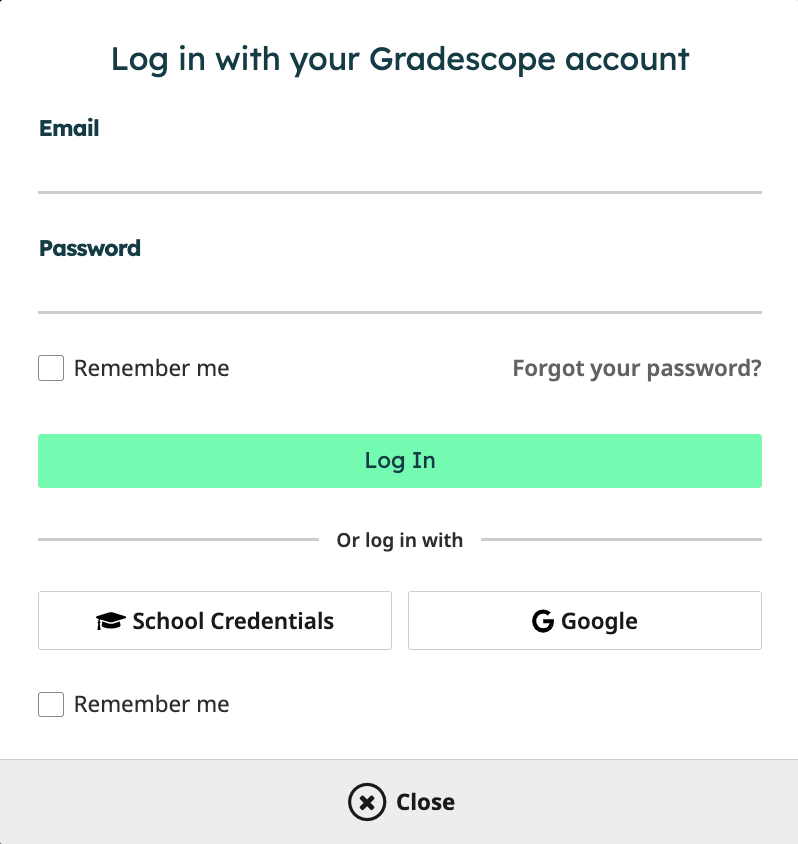
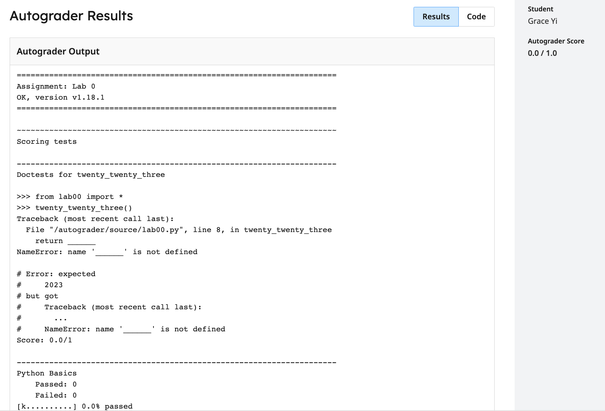

Lab 0: Getting Started
Due by 11:59pm on Wednesday, January 25.
Starter Files
Download lab00.zip. Inside the archive, you will find starter files for the questions in this lab, along with a copy of the Ok autograder.
Introduction
This lab explains how to setup your computer to complete assignments and introduces some of the basics of Python. If you need any help at any time through the lab, please feel free to come to office hours or post on Ed.
This lab is required. The setup is necessary in completing all other assignments in the course. You may not use a lab drop on this assignment. If you joined the course late, you can request an extension.
To complete the assignment, you must complete all of the steps from the Doing the Assignment section onwards, including the WWPD question, the code-writing question, and submitting with Gradescope.
Here's a breakdown of the major parts of the lab:
Setup: Setting up the essential software for the course. This will require several components, listed below.
- Install a Terminal: Install a terminal so you can interact with files in this course and run OK commands. If you have a terminal on your computer and feel comfortable using it, you can skip this part.
- Install Python 3: Install the Python programming langauge to your computer. If you already have Python 3.7 or later (ideally Python 3.9) installed, you can skip this part.
- Install a Text Editor: Install software to edit
.pyfiles for this course (e.g. VSCode, Atom, etc.). You can skip this part if you already have a text editor you like.
- Walkthrough: Using the Terminal: This walks you through how to use the terminal and Python interpreter. If you already feel comfortable with both of these you do not need to read this section.
- Walkthrough: Organizing your Files: This section walks you through how to use your terminal to organize and navigate files for this course. Everyone should at least skim this section, as it has important information specific to this class, but if you are already comfortable navigating directory structures with a terminal much of this will feel familar.
- Review: Python Basics: This is a review on many of the basic components of Python introduced in lecture. You should have already seen this material, but we like to include a brief review of relevant content on each lab in case you need a refresher on anything.
- Required: Doing the Assignment: You must complete this section to get points for the assignment. Here you will practice the different types of problems you will be asked to do in lab, homework, and project assignments for this course. The main goal of this assignment is to give you practice using our software.
- Required: Submitting the Assignment: You must complete this section to get points for the assignment. This will walk you through how to turn in your work after completing the previous section and how to verify that your work is turned in on Gradescope.
- Appendix: Useful Python Command Line Options: These are commands that are useful in debugging your work, but not required to complete the lab. We include them because we imagine they're likely to be helpful to you throughout the course.
Setup
Backup setups
In case you had troubles installing a Python interpreter, text editor, and terminal, or if you are using something that does not allow you to install software, like an iPad, you can as a temporary measure do the assignments in using some of the following steps while you acquire more appropriate hardware.
Soda lab computers
You will need an instructional account which will allow you to log into and use any of the lab computers in Soda. You can see your existing instructional accounts as well as make new instructional accounts for applicable classes by going to: https://inst.eecs.berkeley.edu/connecting.html.
You can login via your CalNet ID to the site. To make an instructional account for this course, click "Get a new account" for the row that has "cs61a" as its purpose.
Once you've made your account, you can then use it to log into a Soda lab computer, and work on course assignments using that computer.
Online editors as a backup
Important: Both of the alternatives listed below are not ideal for use in this course. We recommend being able to use your own local setup or using the lab computers in Soda (which you can access with your course instructional account).
61A Code:
You can use 61A Code, the course online environment where you can edit, run, debug, visualize, and share programs with staff. The documentation for 61A Code can be found here: 61A Code docs.
Note: You will not be able to run
okcommands in 61A Code, which you will need to do for unlocking tests, running tests, and submitting assignments.
Steps to complete this assignment on 61A Code:
- Visit 61A Code.
- Open an existing file: go into your
cs61afolder, then the assignment folder (lab00), in which you can find the files for this assignment. - You will be prompted to authorize the editor. You can click on "Confirm". Back to the editor itself, you can then open the files you would like to edit.
- To open the terminal, click on "Console".
- You can use the editor to write your code and the console to run your code.
Datahub:
Another alternative to working locally is to use Datahub at UC Berkeley.
Steps to complete this assignment on Datahub:
- Visit Datahub.
- Upload the assignment zip file to datahub.
- Open a terminal by pressing "New" in the top left corner and selecting the terminal.
- Navigating to where the zip file is and running
unzip lab00.zip. - Opening up the code file (
lab00.py) and typing in it, then saving. - Now you can submit the lab.
Review: Python Basics
Programs are made up of expressions and statements. An expression is a piece of code that evaluates to some value and a statement is one or more lines of code that make something happen in a program.
When you enter a Python expression into the interactive Python interpreter, its value will be displayed. As you read through the following examples, try out some similar expressions on your own Python interpreter, which you can start up by typing this in your terminal:
python3You'll be learning various types of expressions and statements in this course. For now, let's take a look at the ones you'll need to complete this lab.
Primitive Expressions
Primitive expressions only take one step to evaluate. These include numbers and booleans, which just evaluate to themselves.
>>> 3
3
>>> 12.5
12.5
>>> True
TrueArithmetic Expressions
Numbers may be combined with mathematical operators to form compound
expressions. In addition to the + operator (addition), the - operator
(subtraction), the * operator (multiplication) and the ** operator
(exponentiation), there are three division-like operators to remember:
- Floating point division (
/): divides the first number number by the second, evaluating to a number with a decimal point even if the numbers divide evenly. - Floor division (
//): divides the first number by the second and then rounds down, evaluating to an integer. - Modulo (
%): evaluates to the positive remainder left over from division.
Parentheses may be used to group subexpressions together; the entire expression is evaluated in PEMDAS (Parentheses, Exponentiation, Multiplication / Division, Addition / Subtraction) order.
>>> 7 / 4
1.75
>>> (2 + 6) / 4
2.0
>>> 7 // 4 # Floor division (rounding down)
1
>>> 7 % 4 # Modulus (remainder of 7 // 4)
3Strings
A string consists of one or more characters wrapped in either single quotes ('') or double quotes (""). Strings actually differ slightly from primitive expressions, but for the purposes of this assignment can be treated similarly as expressions which evaluate to themselves. You'll learn more about the intricacies of strings in the coming weeks in this course!
>>> "hello" # Both single and double quotes work!
'hello'
>>> 'world!'
'world'Assignment Statements
An assignment statement consists of a name and an expression. It changes the
state of the program by evaluating the expression to the right of the = sign
and binding its value to the name on the left.
>>> a = (100 + 50) // 2Now, if we evaluate a, the interpreter will display the value 75.
>>> a
75Task A: Doing the Assignment
When working on assignments, ensure that your terminal's working directory is correct (which is likely where you unzipped the assignment).
1) What Would Python Do? (WWPD)
One component of lab assignments is to predict how the Python interpreter will behave.
Enter the following in your terminal to begin this section:
python3 ok -q python-basics -uYou will be prompted to enter the output of various statements/expressions. You must enter them correctly to move on, but there is no penalty for incorrect answers.
The first time you run Ok, you will be prompted for your bCourses email. Please follow these directions. We use this information to associate your code with you when grading.
>>> 10 + 2
______ 12
>>> 7 / 2
______ 3.5
>>> 7 // 2
______ 3
>>> 7 % 2 # 7 modulo 2, the remainder when dividing 7 by 2.
______ 1>>> x = 20
>>> x + 2
______22
>>> x
______20
>>> y = 5
>>> y = y + 3
>>> y * 2
______16
>>> y = y // 4
>>> y + x
______222) Code-Writing Questions
Understanding Problems
Labs will also consist of function writing problems. Open up lab00.py in
your text editor. You can type open . on MacOS or start . on Windows to
open the current directory in your Finder/File Explorer. Then double click or
right click to open the file in your text editor. You should see something like
this:
The lines in the triple-quotes """ are called a docstring, which is a
description of what the function is supposed to do. When writing code in 61A,
you should always read the docstring!
The lines that begin with >>> are called doctests. Recall that when using
the Python interpreter, you write Python expressions next to >>> and the
output is printed below that line. Doctests explain what the function does by
showing actual Python code. It answers the question: "If we input this Python
code, what should the expected output be?"
Here, we've circled the docstrings and the doctests to make them easier to see:
In twenty_twenty_three,
- The docstring tells you to "come up with the most creative expression that
evaluates to 2023," but that you can only use numbers and arithmetic operators
+(add),*(multiply), and-(subtract). - The doctest checks that the function call
twenty_twenty_three()should return the number 2023.
You should not modify the docstring, unless you want to add your own tests! The only part of your assignments that you'll need to edit is the code unless otherwise specified.
Writing Code
Once you understand what the question is asking, you're ready to start writing
code! You should replace the underscores in return ______ with an expression that
evaluates to 2023. What's the most creative expression you can come up with?
Don't forget to save your assignment after you edit it! In most text editors, you can save by navigating to File > Save or by pressing Command-S on MacOS or Ctrl-S on Windows.
3) Running Tests
In CS 61A, we will use a program called ok to test our code. ok will be
included in every assignment in this class.
For quickly generating ok commands, you can now use the ok command generator.
Back to the terminal—make sure you are in the lab00 directory we created
earlier (remember, the cd command lets you change
directories).
In that directory, you can type ls to verify that there are the following
three files:
lab00.py: the starter file you just editedok: our testing programlab00.ok: a configuration file for Ok
Now, let's test our code to make sure it works. You can run ok with this
command:
python3 okRemember, if you are using Windows and the
python3command doesn't work, try using justpythonorpy. See the the install Python 3 section for more info and ask for help if you get stuck!
If you wrote your code correctly and you finished unlocking your tests, you should see a successful test:
=====================================================================
Assignment: Lab 0
Ok, version v1.18.1
=====================================================================
~~~~~~~~~~~~~~~~~~~~~~~~~~~~~~~~~~~~~~~~~~~~~~~~~~~~~~~~~~~~~~~~~~~~~
Running tests
---------------------------------------------------------------------
Test summary
3 test cases passed! No cases failed.If you didn't pass the tests, ok will instead show you something like this:
---------------------------------------------------------------------
Doctests for twenty_twenty_three
>>> from lab00 import *
>>> twenty_twenty_three()
2013
# Error: expected
# 2023
# but got
# 2013
---------------------------------------------------------------------
Test summary
0 test cases passed before encountering first failed test caseFix your code in your text editor until the test passes.
Every time you run Ok, Ok will try to back up your work. Don't worry if it says that the "Connection timed out." We won't use your backups for grading.
While
okis the primary assignment "autograder" in CS 61A, you may find it useful at times to write some of your own tests in the form of doctests. Then, you can try them out using the-m doctestoption for Python).
Task B: Submitting the Assignment
Now that you have completed your first CS 61A assignment, it's time to turn it in. You can follow these next steps to submit your work and get points.
Submit with Gradescope
Log in with School Credentials using your CalNet ID to Gradescope. You’ll be taken to your Dashboard as soon as you log in.


- On your Dashboard, select the course CS61A. You should have already been added to Gradescope. If this is not the case, please make a private Ed post. This will take you to the list of assignments in the course that you’re able to submit. On this list, you will see the status of the assignment, the release date, and the due date.
- Click on the assignment Lab 0 to open it.
When the dialog box appears, click on the gray area that says Drag & Drop. This will open your file finder and you should select your code file
lab00.pythat you edited for this assignment.
Once you’ve chosen your file select the Upload button. When your upload is successful, you’ll see a confirmation message on your screen and you’ll receive an email.
Next, wait a few minutes for the autograder to grade your code file. Your final score will appear at the right and your output should be the same as the one you tested locally. You can check the code that you submitted at the top right where there is a tab labeled Code. If there are any errors, you can edit your
lab00.pycode and click Resubmit at the bottom of your screen to resubmit your code file. Assignments can be resubmitted as many times as you’d like before the deadline
Congratulations, you just submitted your first CS 61A assignment!
Appendix: Useful Python Command Line Options
When running a Python file, you can use options on the command line to inspect your code further. Here are a few that will come in handy. If you want to learn more about other Python command-line options, take a look at the documentation.
Using no command-line options will run the code in the file you provide and return you to the command line. For example, if we want to run
lab00.pythis way, we would write in the terminal:python3 lab00.py-i: The-ioption runs your Python script, then opens an interactive session. In an interactive session, you run Python code line by line and get immediate feedback instead of running an entire file all at once. To exit, typeexit()into the interpreter prompt. You can also use the keyboard shortcutCtrl-Don Linux/Mac machines orCtrl-Z Enteron Windows.If you edit the Python file while running it interactively, you will need to exit and restart the interpreter in order for those changes to take effect.
Here's how we can run
lab00.pyinteractively:python3 -i lab00.py-m doctest: Runs doctests in a particular file. Doctests are surrounded by triple quotes (""") within functions.Each test in the file consists of
>>>followed by some Python code and the expected output (though the>>>are not seen in the output of the doctest command).To run doctests for
lab00.py, we can run:python3 -m doctest lab00.py